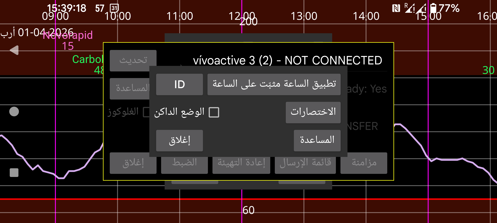

ar be de es fr hi nl pl pt ru tr uk uz zh en
يمكن تنزيل مصدر Kerfstok من https://www.juggluco.nl/Kerfstok/Kerfstok-source.html. يحق للمستخدمين تعديله. لكل تطبيق ساعة معرّف فريد. إذا كان المعرّف مختلفاً عن الافتراضي، فيجب أن يعرفه Juggluco لكي يتمكن من التواصل مع تطبيق الساعة. لتحديد معرّف مختلف اضغط ID وأدخل سلسلة سداسية عشرية من 32 محرفاً. يمكن لـ Juggluco على جهاز واحد الاتصال بتطبيق ساعة واحد فقط على ساعة واحدة. وقد تؤدي التغييرات إلى فقدان البيانات.
تُرسل الاختصارات إلى تطبيق ساعة Garmin Kerfstok لتسهيل إدخال قيم معيّنة.
حدّد ما إذا كان Kerfstok يجب أن يكون أبيض على أسود بدلاً من أسود على أبيض.